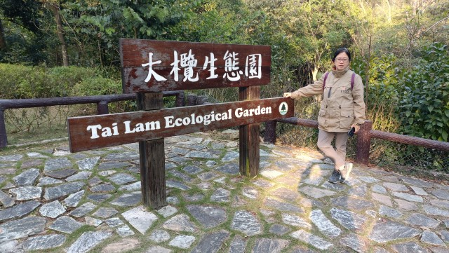

在2022年2月25日, 我和 Alex 進行了一次大欖郊野公園的登山遠足行程, 路線分為四段, 全程約15公里。
第一段: 從大欖屯門公路轉車站步行登山到大欖涌水塘主壩;
第二段: 沿水塘畔的道路走到大㰖涌水塘的東北面;
第三段: 轉走大欖自然教育徑, 攀山越谷到達深井沉澱池 (也稱深井水塘);
第四段: 最後沿步道步行下山到深井。
全程道路鋪設得很好, 是老幼合適的遠足行山路線。
我們在早上從荃灣搭乘53號巴士，於早上 11:15抵達大欖屯門公路轉車站。下了車, 看見車站附近的海濱風景不錯，便在那裡流連了一會。
欣賞完海濱風景, 正式開始今日的遠足行程啦!
離開大欖屯門公路轉車站，拐左沿青山公路大欖段向上走。經過海事訓練學院、大欖涌天后廟。再往上走一會便來到大欖涌巴士站。
如果想走少一些路，不要在剛才在大欖屯門公路轉車站下車, 改為在這裡下車。
來到一個分叉路口。路口豎立了大欖涌牌坊。
大欖，又稱大欖涌，是香港屯門區最東南的地方，位於小欖之東，與荃灣區的青龍頭接壤。 「大欖涌」原指由「大欖」旁邊流出海的涌。
在這裡右轉沿大欖涌路走。
從這裡開始, 只要沿大欖涌路一直往上走便可以抵達大㰖涌水塘, 路線十分簡單。
大欖涌路旁的大欖涌流水悠悠, 風景不錯，不時停下來欣賞和拍照。
我們一直向前走，經過大欖涌路旁的一間村屋餐廳, 名叫「阿一廚房餐廳」，便打算在這裡吃午餐才繼續行程。
步進餐廳, 因為是中午時分，很多地盤工人正在這用餐，座無虛席。正在徬徨之際, 餐廳外面的一張餐桌剛好有人離座，便立即走前去坐下來。
阿一廚房餐廳的午餐主要供應碟頭飯, 有很多選擇，我們叫了一碟章魚肉餅蒸飯和豆腐煎魚柳飯。
兩個餐的味道很好，很有水準，比很多大餐廳還要好。
吃完午餐，繼續行程, 沿大欖涌路向前走。
走了一會，當穿過一道閘門後，便進入了大欖涌懲教所的範圍。
這段大欖涌路穿梭於大欖涌懲教所中，走起來令人戰戰兢兢的, 連說話也不禁細細聲。
一直向前走, 來到路中有一個噴水池的迴旋處。
拐過迴旋處後, 迎面是一個分叉路口。
前面和右邊這兩條路都可以到達大㰖涌水塘。主要分別是:
前面的路會到達大㰖涌水塘主壩西面的入口。
而右邊的路則會穿過大欖懲教所, 然後到達大㰖涌水塘主壩東面的地方。
至於選擇走那條路, 完全取決於步行路線。
我們選擇前面的路走。
接著走上橫躺大欖涌兩岸的一條石橋, 這裡已經可以眺望山坡上的大㰖涌水塘主壩。
現在是冬天, 腳下的大欖涌有如一條細細的溝渠。當夏天雨季來臨, 大㰖涌水塘主壩排水時, 大欖涌便變成一條流水滔滔的河, 別有一番景色。
跨過大欖涌後, 沿彎彎曲曲的坡道一直往上走, 很容易便登上了大㰖涌水塘主壩西面的入口。
就這樣輕鬆的完成了第一段遠足行程。
大欖涌水塘水塘由橫跨大欖涌谷的 200呎高主壩，以及3條跨越鄰近較小河谷的副壩所組成, 儲水量為45億加侖。
很久沒有來大㰖涌水塘旅行了, 所以打算先往風景優美的小欖路小水霸遊覽, 然後才開始第二段遠足行程。
暫時離開大㰖涌水塘主壩, 拐左穿過綠草如茵的野餐區, 然後沿水塘畔步道循「青山公路 小欖」的方向走。
以往每次來到這裡, 都很享受在大㰖涌水塘畔的步道漫步。但是, 不知道從什麼時候開始, 水塘畔的步道開闢為越野單車徑，所以現在經常有單車以高速迎面和身後擦身而過, 完全沒有理會行人的安全, 感覺好像是我們阻礙了他們的活動。
戰戰兢兢的沿越野單車徑走約20分鐘便抵達小欖路小水霸。這裡的風景仍然是那麼優美, 和記憶中的沒有多大改變。
大㰖涌水塘除了主壩外, 另外3條副壩都是以土石壩 (Earth Embankment Dam) 設計來建造。
在小欖路小水霸欣賞完風景後, 掉頭循原路走一會, 約下午 2:00便返回大㰖涌水塘主壩的西面。
接著立即開始第二段至第四段的遠足行程。
我們會從這裡開始, 穿過大㰖涌水塘主壩, 沿水塘畔的道路走到大㰖涌水塘的東北面, 然後轉走大欖自然教育徑, 攀山越谷到達深井沉澱池, 最後步行下山到深井。
全程約12公里, 估計步行約4小時, 應該可以趕及在天黑前抵達深井的。
我們從西面入口進入大㰖涌水塘主壩。
大㰖涌水塘主壩起初一段是24米高、 335米長, 彎曲構造的土石壩。
土石壩左邊是美麗的湖景, 右邊山谷下是大欖懲教所建築群。
走過土石壩, 來到大㰖涌水塘主壩中的一個圓形廣場。
圓形廣場旁豎立了一塊大㰖涌水塘落成紀念碑, 紀念當時這偉大工程的落成。
在水塘落成開幕時, 曾經討論過水塘使用的正確名稱。因水壩位於大㰖, 所以官方給予大㰖水塘 (Tai Lam Reservoir) 這名稱。不過, 市民卻喜歡採用大㰖涌水塘這名稱。
繼續沿水壩向前走, 當穿過一道鐵閘後, 便正式進入了大㰖涌水塘主壩最雄偉的瀑布主壩 (Waterfall Dam)。
大欖涌水塘是本港二戰後第一個興建的水塘, 工程浩大。1953年3月開始施工, 經歷4年, 於1957年12月7日才落成, 其後3年繼續進行集水及輸水擴建, 至此工程才正式宣佈全部完結。
大㰖涌水塘主壩中的瀑布主壩分兩期建造, 第一期46米高、250米長, 儲水量為10億加侖 ; 而第二期將主壩提昇至61高米、366米長, 總儲水量為45億加侖。
大㰖涌水塘瀑布主壩筆直雄偉, 左邊是青山環繞, 綠水悠悠的湖泊, 景色秀麗。昔日大欖涌谷佈滿高高低低的山丘, 當大欖涌水塘建成後, 山谷被水所淹蓋, 而突出湖面的山丘便形成一個個不同形狀的島嶼, 風景非常秀麗, 因而有大欖涌千島湖的美譽
瀑布主壩右邊的腳下則是大欖懲教所建築群, 佔據整個大欖涌山谷, 和另一邊風景優美的湖泊形成強烈對比。
大㰖涌水塘主壩全長約750米, 走走看看和拍照, 約20分鐘便走完。
當穿過東面的一道鐵閘, 便正式離開了大㰖涌水塘主壩。
我們是往大㰖涌水塘的東北面, 沿道路繼續向前走。
走了一會, 向右拐了一個急彎, 道路漸漸向上傾斜, 又開始登山啦!
來到山腰中, 這裡有兩個觀景台, 可以俯瞰大㰖涌谷、大㰖涌水塘及主壩全貌, 景色壯觀。
兩個觀景台所看到的風景有點不同。
第一個觀景台可以看到整條主壩上的步道;
而第二個觀景台則可以更清楚看到水壩排水的構造。
再往前走便來到一個分叉路口。
繼續向前走便返回山下的大欖涌懲教所、大欖涌村和大欖屯門公路轉車站。
我們是往深井, 在這裡轉左循田夫仔的方向走。
因為田夫仔位於大欖郊野公園中多條遠足路線的交匯路口, 所以經常會看到這路標的。
接著的道路依水塘畔而建, 沿途可俯瞰大㰖涌水塘及四周景色, 風景不錯。
不過, 沿途單車來來往往, 速度很快, 走起來戰戰兢兢, 並不太寫意。有時更恐怕他們失事, 將我們推落山谷, 所以都盡量貼近山邊走。
途中有一些小路通往大欖郊野公園其他地點, 增加遠足路線的變化。
沿水塘畔的道路繼續向前走。
從大㰖涌水塘主壩東面鐵閘出口計, 沿道路走了1小時30分, 來到一個分叉路口, 迎面便是大欖自然教育徑, 就這樣完成了第二段的遠足行程。
在路口稍作休息後, 接著開始第三段行程:沿大欖自然教育徑走, 攀山越谷到達深井沉澱池 (也稱深井水塘);
在路口轉右循往青龍頭的方向走。
接著是一段通往山上, 好像永遠走不完的長命斜。
非常吃力地沿斜坡一直往上走了半小時, 感覺來到最高的山坡上。
滿以為接著應該一直都是下山路, 怎料往下只走一小段, 迎面又是另一段向上的斜坡。
走上斜坡後, 看來這裡才是最高的山坡吧!
唉! 又錯了! 走下下坡, 迎面竟然又是另一條非常陡斜的長命斜, 真是攞命!
接著上上落落幾個山谷後, 來到大欖自然教育徑觀景台, 這裡可眺望大㰖涌水塘, 遠至屯門和青山也隱約可見。
在大欖自然教育徑觀景台休息了一會, 繼續行程, 前面又是另一條非常陡斜的長命斜。
真不明白, 為何這條路永遠都去不到山頂的?
當每次都以為終於抵達山頂時, 接著又是另一段向上的長命斜! 真令人氣餒!
接著又上上落落了幾個山谷, 來到另一個大欖自然教育徑觀景台。
望望前面和四周, 終於來到這條步道最高的地方啦!
觀景台視野十分開揚, 北面可眺望天水圍、元朗, 后海灣, 遠至深圳市也隱約可見。
而觀景台的南面則可眺望青衣、青馬大橋和南丫島, 風景十分優美。
在觀景台稍作休息, 繼續行程。
從這裡開始到深井沉澱池, 都是下山路, 舒服很多了!
沿彎彎曲曲道路一直往下走, 約下午 5:10來到大㰖生態園。
大㰖生態園原本是塊荒地, 有一條充滿生機的溪流, 四周長滿了不同品種的植物。因為這裡的生態價值很高, 所以就地興建了大㰖生態園, 將原地植物保留下來, 並加種了附近生長的植物, 然後按生態環境劃分為蕨 (音決)園、蝴蝶谷、淡水生態、食蟲植物和有趣植物五個區域, 有如一個自然生態環境的縮影。
匆匆的遊覽完大㰖生態園, 繼續行程。
這時離太陽下山只有一小時, 而這裡離深井還有一段頗長路程, 要加快腳步了!
繼續往下走。
天色漸漸昏暗, 開始擔心能否在天黑前抵達深井。
一直往下走。
當來到圓墩郊遊徑入口時, 才鬆了一口氣。
因為我們幾星期前從青龍頭遠足到圓墩村古屋村, 就是走這條路, 所以對前面一段路十分熟悉, 下山的時間也可以掌握到。
繼續沿大欖自然教育徑一直往下走。
經過圓墩觀景台, 順便往那裡欣賞風景。
圓墩觀景台視野很好，可眺望深井、青龍頭、青馬大橋、馬灣、汲水門大橋及大嶼山，景色壯麗。
在圓墩觀景台欣賞完風景，繼續沿大欖自然教育徑往下走一會便來到大欖郊野公園的深井入口, 這裡也是龍如路的盡頭。
就這樣完成了最辛苦的第三段遠足行程。
接著展開第四段行程, 也是今天最後的一段行程
最快離開的路線是沿龍如路一直往下走, 約20分鐘便可到達青龍頭, 然後在那裡乘綠色專線小巴返回荃灣。
我們上次也是從龍如路離開。
不過, 今次想有些改變, 從深井離開。
接著在路口轉左走。和上次來的時候差不多, 沿途都泊了很多汽車, 完全沒有郊野公園的感覺。
步行一會便來深井沉澱池 (也稱為深井水塘)的堤壩。
雖然幾星期前已經來過深井沉澱塘, 但既然來到, 當然也不忘順道遊覽。
深井水塘 (也稱為深井沉澱池) 位於大欖郊野公園邊緣，主要水源來自深井清快塘的「鬼怒坑」，經深井濾水廠過濾後，直接為深井一帶居民提供食水。 深井水塘還有另一個功能，就是收集附近的山水，當滿溢時，便經地下管道流往大欖涌水塘儲存。
離開深井水塘, 在水塘堤壩入口的分叉路口繼續向前走。
這是一段向上頗為陡斜的道路, 走起來有點吃力。
向右拐個彎, 左手邊的樹林中有一條通往山下的石級。
這便是通往深井的步道。
轉左循石級一直往下走。
起初一段沒有分叉路口, 可以放心的走。
走了一會, 來到山腰中, 沿途不時閃出一些分叉路口, 都是往村落中的民居, 不要走錯。
沿彎彎曲曲的石級及步道往下走了20分鐘, 天色變得昏暗, 街燈也亮起了, 四周泛起一片橙黃燈光, 催促我們要加快腳步啦!
繼續沿村落中的步道往下走。
當穿過荒廢了的「深井公立學校」牌坊, 再往下走便來到山下的深井村。
這裡也是我們今天遠足行程的終點站啦!